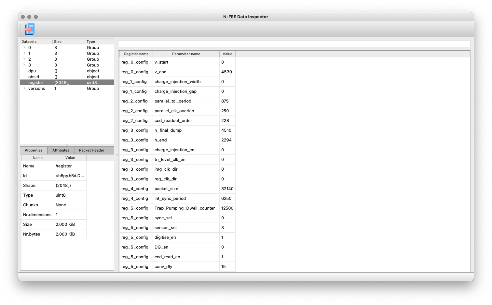
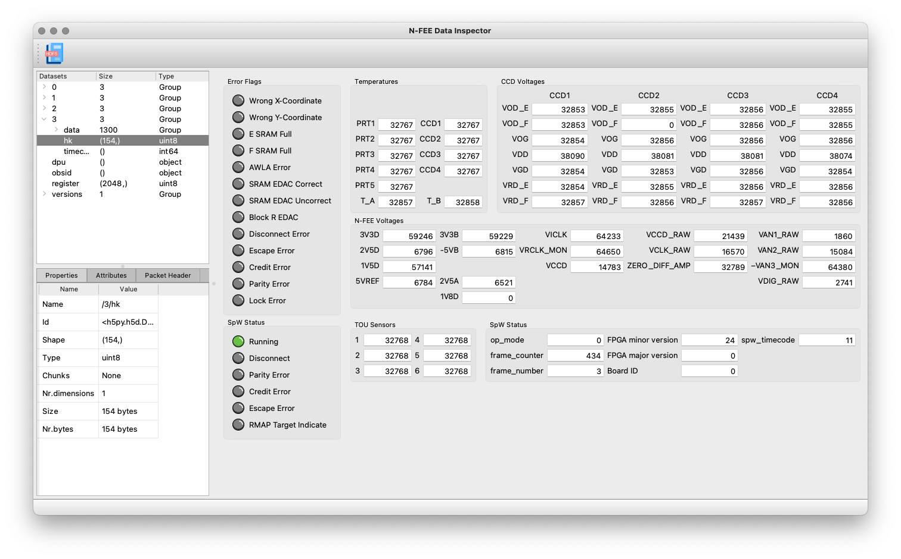
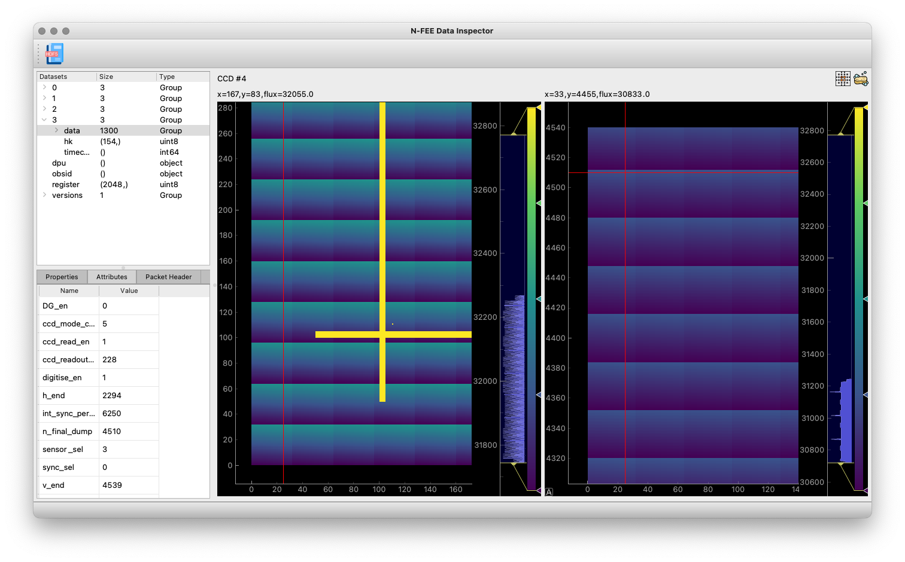
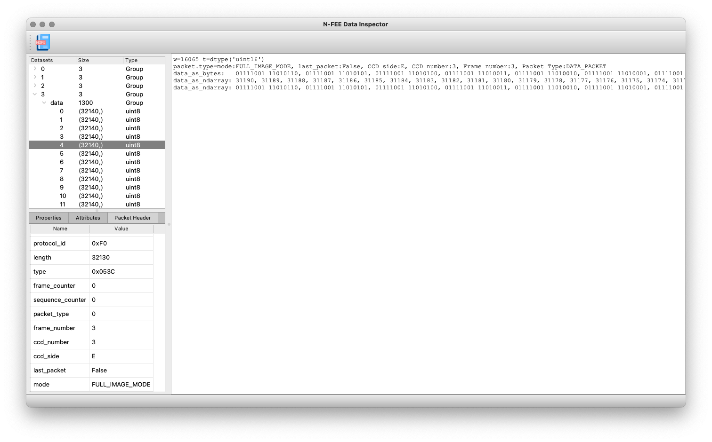

Changelog
- 18/06/2023 — v0.3
-
-
Added description of the N-FEE-HK CSV file, see Section 4.5.2
-
Added a table with a description of all files that are used by the CGSE and test scripts, see Chapter 6
-
Added a description of the
obsid-table.txt, see Chapter 5 -
added a backlink to the CGSE Documentation web site for your convenience. It’s at the top of the HTML page.
-
- 04/05/2023 — v0.2
-
-
Updated the HDF5 format version information, see [format-version].
-
- 21/02/2023 — v0.1
-
-
Introduce Changelog, this section
-
Added section on the format of the HDF5 files, see Section 4.2
-
Added section on inspecting an HDF5 file, see Section 4.3
-
Colophon
Copyright © 2022, 2023 by the KU Leuven PLATO CGSE Team
1st Edition — February 2023
This manual is written in PyCharm using the AsciiDoc plugin. The PDF Book version is processed with asciidoctor-pdf.
The manual is available as HTML from ivs-kuleuven/github.io. The HTML pages are generated with Hugo which is an OSS static web-pages generator. From this site, you can also download the PDF books.
The source code is available in a GitHub repository at ivs-kuleuven/plato-cgse-doc.
When you find an error or inconsistency or you have some improvements to the text, feel free to raise an issue or create a pull request. Any contribution is greatly appreciated and will be mentioned in the acknowledgement section.
Conventions used in this Book
We try to be consistent with the following typographical conventions:
- Italic
-
Indicates a new term or …
- Constant width
-
Used for code listings, as well as within paragraphs to refer to program elements like variable and function names, data type, environment variables (
ALL_CAPS), statements and keywords. - Constant width between angle brackets
<text> -
Indicates
textthat should be replaced with user-supplied values or by values determined by context. The brackets should thereby be omitted.
When you see a $ … in code listings, this is a command you need to execute in a terminal (omitting the dollar sign itself). When you see >>> … in code listings, that is a Python expression that you need to execute in a Python REPL (here omitting the three brackets).
- Setup versus setup
-
I make a distinction between Setup (with a capital C) and setup (with a small c). The Setup is used when I talk about the object as defined in a Python environment, i.e. the entity itself that contains all the definitions, configuration and calibration parameters of the equipment that make up the complete test setup (notice the small letter 'c' here).
(sometimes you may find setup in the document which really should be 'set up')
- Using TABs
-
Some of the manuals use TABs in their HTML version. Below, you can find an example of tabbed information. You can select between FM and EM info and you should see the text change with the TAB.
| This feature is only available in the HTML version of the documents. If you are looking at the PDF version of the document, the TABs are shown in a frame where all TABs are presented successively. |
-
FM
-
EM
In this TAB we present FM specific information.
In this TAB we present EM specific information.
- Using Collapse
-
Sometimes, information we need to display is too long and will make the document hard to read. This happens mostly with listings or terminal output and we will make that information collapsible. By default, the info will be collapsed, press the small triangle before the title (or the title itself) to expand it.
| In the PDF document, all collapsible sections will be expanded. |
A collapsible listing
plato-data@strawberry:/data/CSL1/obs/01151_CSL1_chimay$ ls -l total 815628 -rw-r--r-- 1 plato-data plato-data 7961 Jun 20 10:38 01151_CSL1_chimay_AEU-AWG1_20230620_095819.csv -rw-r--r-- 1 plato-data plato-data 9306 Jun 20 10:38 01151_CSL1_chimay_AEU-AWG2_20230620_095819.csv -rw-r--r-- 1 plato-data plato-data 309375 Jun 20 10:38 01151_CSL1_chimay_AEU-CRIO_20230620_095819.csv -rw-r--r-- 1 plato-data plato-data 42950 Jun 20 10:38 01151_CSL1_chimay_AEU-PSU1_20230620_095819.csv -rw-r--r-- 1 plato-data plato-data 43239 Jun 20 10:38 01151_CSL1_chimay_AEU-PSU2_20230620_095819.csv -rw-r--r-- 1 plato-data plato-data 42175 Jun 20 10:38 01151_CSL1_chimay_AEU-PSU3_20230620_095819.csv -rw-r--r-- 1 plato-data plato-data 42327 Jun 20 10:38 01151_CSL1_chimay_AEU-PSU4_20230620_095819.csv -rw-r--r-- 1 plato-data plato-data 42242 Jun 20 10:38 01151_CSL1_chimay_AEU-PSU5_20230620_095819.csv -rw-r--r-- 1 plato-data plato-data 42269 Jun 20 10:38 01151_CSL1_chimay_AEU-PSU6_20230620_095819.csv -rw-r--r-- 1 plato-data plato-data 67149 Jun 20 10:38 01151_CSL1_chimay_CM_20230620_095819.csv -rw-r--r-- 1 plato-data plato-data 20051 Jun 20 10:38 01151_CSL1_chimay_DAQ6510_20230620_095819.csv -rw-r--r-- 1 plato-data plato-data 105 Jun 20 10:38 01151_CSL1_chimay_DAS-DAQ6510_20230620_095819.csv -rw-r--r-- 1 plato-data plato-data 19721 Jun 20 10:38 01151_CSL1_chimay_DPU_20230620_095819.csv -rw-r--r-- 1 plato-data plato-data 22833 Jun 20 10:38 01151_CSL1_chimay_FOV_20230620_095819.csv -rw-rw-r-- 1 plato-data plato-data 833754240 Jun 20 10:34 01151_CSL1_chimay_N-FEE_CCD_00001_20230620_cube.fits -rw-r--r-- 1 plato-data plato-data 292859 Jun 20 10:38 01151_CSL1_chimay_N-FEE-HK_20230620_095819.csv -rw-r--r-- 1 plato-data plato-data 8877 Jun 20 10:38 01151_CSL1_chimay_OGSE_20230620_095819.csv -rw-r--r-- 1 plato-data plato-data 19841 Jun 20 10:38 01151_CSL1_chimay_PM_20230620_095819.csv -rw-r--r-- 1 plato-data plato-data 188419 Jun 20 10:38 01151_CSL1_chimay_PUNA_20230620_095819.csv -rw-r--r-- 1 plato-data plato-data 7662 Jun 20 10:38 01151_CSL1_chimay_SMC9300_20230620_095819.csv -rw-r--r-- 1 plato-data plato-data 19781 Jun 20 10:38 01151_CSL1_chimay_SYN_20230620_095819.csv -rw-r--r-- 1 plato-data plato-data 147569 Jun 20 10:38 01151_CSL1_chimay_SYN-HK_20230620_095819.csv plato-data@strawberry:/data/CSL1/obs/01151_CSL1_chimay$
1. TODO
-
Describe the format of the FITS files containing CCD data
-
Describe the format of the HDF5 files containing SpaceWire data from the N-FEE
-
Describe the interface to the Storage, i.e. the expected keys for the dictionaries that are passed like
prepanditem…
2. Introduction
This document describes the software and hardware interfaces for the PLATO Common-EGSE, which is used at CSL and the test houses at IAS, INTA and SRON.
This ICD defines all the connections between the components in the instrument test setup that interface with the Common-EGSE. It defines these interface in terms of hardware, i.e. cables, connectors, electrical properties, and in terms of software, i.e. communication protocols, message buffers, timing, data formats etc.
3. Software Interfaces
3.1. The Storage Data Interface
The Storage Manager … TBW
key |
register | unregister | new_registration | read | save | get_filenames |
|---|---|---|---|---|---|---|
|
required |
required |
required |
required |
required |
required |
|
required |
required |
required |
required |
required |
|
|
required |
required |
||||
|
created 1 |
used2 |
used2 |
used2 |
used2 |
|
|
optional |
|||||
|
required |
|||||
|
optional |
|||||
|
required |
1 — The persistence_objects key is created during registration and used internally to manage all the persistent objects that are associated to the item.
2 — This key which was created during registration is used to perform an action on the persistent objects associated with this item.
3 — When the persistent_count is provided in the item, the file is treated specially. The file will not be cloned when an observation is started, nor will it be cycled when a new day is started. Basically, the file is created once and not cloned, cycled or closed. An example is the obsid-table.txt which is used by the configuration manager.
4 — When the filename key is present, the file will be created with the given name in the folder provided by the FILE_STORAGE_LOCATION field for the Storage manager in the Settings. By default, this is the $PLATO_DATA_STORAGE_LOCATION environment variable, but that can be changed in the local settings (which is not preferred!).
In the following example you can see how to check the registrations on the Storage Manager and which persistence_objects are associated with each of the registered items. This particular example is during an observation run and therefore each registered item has a persistent object in the daily folder, and one in the obs folder for the observation 299. It is also clear that the obsid-table.txt is only in the top-level data folder because it was created with the persistence_count key.
[plato-data@plato-arrakis 20220701]$ sm_cs status --full
Storage Manager:
Status: active
Hostname: 129.175.66.182
Monitoring port: 6101
Commanding port: 6100
Service port: 6102
Storage location: /data/IAS
Registrations: ['SYN-HK', 'SYN', 'obsid', 'CM', 'PM', 'CDAQ9184', 'FOV', 'DAQ6510', 'ZONDA',
'KSC101', 'PTC10', 'EQ99', 'TCS', 'TCS-HK', 'DAS-PTC10', 'AEU-CRIO', 'AEU-PSU1', 'AEU-PSU2',
'AEU-PSU3', 'AEU-PSU4', 'AEU-PSU5', 'AEU-PSU6', 'AEU-AWG1', 'AEU-AWG2', 'N-FEE_SPW', 'DPU',
'N-FEE-HK', 'FW8SMC4']
Filenames for all registered items:
SYN-HK -> [PosixPath('/data/IAS/daily/20220701/20220701_IAS_SYN-HK.csv'), PosixPath('/data/IAS/obs/00299_IAS/00299_IAS_SYN-HK_20220701_132613.csv')]
SYN -> [PosixPath('/data/IAS/daily/20220701/20220701_IAS_SYN.csv'), PosixPath('/data/IAS/obs/00299_IAS/00299_IAS_SYN_20220701_132613.csv')]
obsid -> [PosixPath('/data/IAS/obsid-table.txt')]
CM -> [PosixPath('/data/IAS/daily/20220701/20220701_IAS_CM.csv'), PosixPath('/data/IAS/obs/00299_IAS/00299_IAS_CM_20220701_132613.csv')]
PM -> [PosixPath('/data/IAS/daily/20220701/20220701_IAS_PM.csv'), PosixPath('/data/IAS/obs/00299_IAS/00299_IAS_PM_20220701_132613.csv')]
CDAQ9184 -> [PosixPath('/data/IAS/daily/20220701/20220701_IAS_CDAQ9184.csv'), PosixPath('/data/IAS/obs/00299_IAS/00299_IAS_CDAQ9184_20220701_132613.csv')]
FOV -> [PosixPath('/data/IAS/daily/20220701/20220701_IAS_FOV.csv'), PosixPath('/data/IAS/obs/00299_IAS/00299_IAS_FOV_20220701_132613.csv')]
DAQ6510 -> [PosixPath('/data/IAS/daily/20220701/20220701_IAS_DAQ6510.csv'), PosixPath('/data/IAS/obs/00299_IAS/00299_IAS_DAQ6510_20220701_132613.csv')]
ZONDA -> [PosixPath('/data/IAS/daily/20220701/20220701_IAS_ZONDA.csv'), PosixPath('/data/IAS/obs/00299_IAS/00299_IAS_ZONDA_20220701_132613.csv')]
KSC101 -> [PosixPath('/data/IAS/daily/20220701/20220701_IAS_KSC101.csv'), PosixPath('/data/IAS/obs/00299_IAS/00299_IAS_KSC101_20220701_132613.csv')]
PTC10 -> [PosixPath('/data/IAS/daily/20220701/20220701_IAS_PTC10.csv'), PosixPath('/data/IAS/obs/00299_IAS/00299_IAS_PTC10_20220701_132613.csv')]
EQ99 -> [PosixPath('/data/IAS/daily/20220701/20220701_IAS_EQ99.csv'), PosixPath('/data/IAS/obs/00299_IAS/00299_IAS_EQ99_20220701_132613.csv')]
TCS -> [PosixPath('/data/IAS/daily/20220701/20220701_IAS_TCS.csv'), PosixPath('/data/IAS/obs/00299_IAS/00299_IAS_TCS_20220701_132613.csv')]
TCS-HK -> [PosixPath('/data/IAS/daily/20220701/20220701_IAS_TCS-HK.csv'), PosixPath('/data/IAS/obs/00299_IAS/00299_IAS_TCS-HK_20220701_132613.csv')]
DAS-PTC10 -> [PosixPath('/data/IAS/daily/20220701/20220701_IAS_DAS-PTC10.csv'), PosixPath('/data/IAS/obs/00299_IAS/00299_IAS_DAS-PTC10_20220701_132613.csv')]
AEU-CRIO -> [PosixPath('/data/IAS/daily/20220701/20220701_IAS_AEU-CRIO.csv'), PosixPath('/data/IAS/obs/00299_IAS/00299_IAS_AEU-CRIO_20220701_132613.csv')]
AEU-PSU1 -> [PosixPath('/data/IAS/daily/20220701/20220701_IAS_AEU-PSU1.csv'), PosixPath('/data/IAS/obs/00299_IAS/00299_IAS_AEU-PSU1_20220701_132613.csv')]
AEU-PSU2 -> [PosixPath('/data/IAS/daily/20220701/20220701_IAS_AEU-PSU2.csv'), PosixPath('/data/IAS/obs/00299_IAS/00299_IAS_AEU-PSU2_20220701_132613.csv')]
AEU-PSU3 -> [PosixPath('/data/IAS/daily/20220701/20220701_IAS_AEU-PSU3.csv'), PosixPath('/data/IAS/obs/00299_IAS/00299_IAS_AEU-PSU3_20220701_132613.csv')]
AEU-PSU4 -> [PosixPath('/data/IAS/daily/20220701/20220701_IAS_AEU-PSU4.csv'), PosixPath('/data/IAS/obs/00299_IAS/00299_IAS_AEU-PSU4_20220701_132613.csv')]
AEU-PSU5 -> [PosixPath('/data/IAS/daily/20220701/20220701_IAS_AEU-PSU5.csv'), PosixPath('/data/IAS/obs/00299_IAS/00299_IAS_AEU-PSU5_20220701_132613.csv')]
AEU-PSU6 -> [PosixPath('/data/IAS/daily/20220701/20220701_IAS_AEU-PSU6.csv'), PosixPath('/data/IAS/obs/00299_IAS/00299_IAS_AEU-PSU6_20220701_132613.csv')]
AEU-AWG1 -> [PosixPath('/data/IAS/daily/20220701/20220701_IAS_AEU-AWG1.csv'), PosixPath('/data/IAS/obs/00299_IAS/00299_IAS_AEU-AWG1_20220701_132613.csv')]
AEU-AWG2 -> [PosixPath('/data/IAS/daily/20220701/20220701_IAS_AEU-AWG2.csv'), PosixPath('/data/IAS/obs/00299_IAS/00299_IAS_AEU-AWG2_20220701_132613.csv')]
N-FEE_SPW -> [PosixPath('/data/IAS/daily/20220701/20220701_IAS_N-FEE_SPW_01903.hdf5')]
DPU -> [PosixPath('/data/IAS/daily/20220701/20220701_IAS_DPU.csv'), PosixPath('/data/IAS/obs/00299_IAS/00299_IAS_DPU_20220701_132613.csv')]
N-FEE-HK -> [PosixPath('/data/IAS/daily/20220701/20220701_IAS_N-FEE-HK.csv'), PosixPath('/data/IAS/obs/00299_IAS/00299_IAS_N-FEE-HK_20220701_132613.csv')]
FW8SMC4 -> [PosixPath('/data/IAS/daily/20220701/20220701_IAS_FW8SMC4.csv'), PosixPath('/data/IAS/obs/00299_IAS/00299_IAS_FW8SMC4_20220701_132613.csv')]
An observation is registered: IAS_00062_00299
Total disk space: 1.718 TiB
Used disk space: 183.215 GiB (10.41%)
Free disk space: 1.452 TiB (84.50%)
[plato-data@plato-arrakis 20220701]$
4. Data Format
4.1. The format of the FITS files
During the camera tests, the DPU will be configured such that a specific part of the E- and/or F-side of the selected CCDs will be transmitted (in the form of SpW packets) for a specified number of cycles. The following information will be reconstructed from these SpW packets and stored in FITS files:
-
transmitted image data of the selected side(s) of the selected CCDs, for all cycles;
-
transmitted serial pre-scan data of the selected side(s) of the selected CCDs, for all cycles;
-
transmitted serial over-scan data of the selected side(s) of the selected CCDs, for all cycles;
-
transmitted parallel over-scan data (if any) of the selected side(s) of the selected CCDs, for all cycles.
While the SpW packets come in, the individual exposures are stored in individual extensions in FITS files that carry "images" in their name. This type of data arrangement is called a "flat structure". When there’s a change in crucial parameters, a new FITS file will be constructed (with "cube" in its name), based on the flat-structure FITS file, in which the exposures are aggregated into cubes. The original, flat-structure file will be removed from the system. For analysis, only the FITS files with the cubes will be available, and therefore only the structure of these will be discussed in the section below.
Each of the extensions (apart from the PRIMARY extension) will occur only once and comprise a 3D data array and a header with the metadata that is specific to that extension. The name of an extension will reflect what type of data product it comprises (e.g. image data of the F-side of CCD2, serial pre-scan data of the E-side of CCD3, etc.).
The following extensions can be included in the FITS files:
-
descibe the slicing strategy and how this is handled in the commanding
4.1.1. Crucial Parameters
4.1.2. FITS Filenames
4.1.3. Slicing Strategy
4.2. The format of the HDF5 files
The HDF5 files contain the raw data that is read out from the camera through the spacewire interface that is connected to the front-end-electronics (FEE).
In contrast to the FITS files, which are organised around the image data, the HDF5 files are organised around the readout sequence and the telemetry that is sent out by the camera. Each HDF5 file contains exactly one readout sequence, i.e. four frames in external sync mode and one frame for internal sync. The data is not processed, but the raw data packets are saved as an Numpy array of type uint8, all values are unsigned integers of 8 bits, i.e. a byte.
Inspecting the HDF5 files can be done with the h5py module or you can use the CGSE module egse.h5 which provides convenience functions to work with HDF5 files. We normally use the CGSE module to explore the HDF5 files, but will provide equivalent code for inspection with the h5py module where possible.
-
egse.h5
-
h5py
>>> from egse import h5
>>> import h5py
Let’s take an example file from IAS taken on 7th February 2023. The file is loaded with the h5.get_file() function and we can visualize the top level structure as follows:
-
egse.h5
-
h5py
>>> h5_fd = h5.get_file("20230207_IAS_N-FEE_SPW_06174.hdf5")
>>> h5.show_file(h5_fd)
[G] 0
[G] 1
[G] 2
[G] 3
[D] dpu (104 bytes)
[D] obsid (104 bytes)
[D] register (2.109 KB)
[G] versions
Total size of Group = 159.597 MB
Total size of attributes: 0 bytes
>>> h5_fd = h5py.File("20230207_IAS_N-FEE_SPW_06174.hdf5")
>>> [x for x in h5_fd]
['0', '1', '2', '3', 'dpu', 'obsid', 'register', 'versions']
We can see that there are five top-level groups and three datasets. This is data taken in external sync mode, so we have four readouts per cycle. The data from each readout is in the groups 0, 1, 2, and 3. These numbers correspond to the frame number. Each of these groups has the following structure:
-
egse.h5
-
h5py
>>> h5.show_groups(h5_fd["/0"], max_level=1) [G] data [D] hk (266 bytes) [D] timecode (104 bytes) Total size of Group = 39.899 MB
>>> [x for x in h5_fd["/0"]] ['data', 'hk', 'timecode']
The data group contains all the SpaceWire packets that have image data, i.e. normal data packets and overscan packets. The data group also has the following attributes that are used to decode the SpaceWire packets into image data arrays. We will describe the data groups into more detail later in this section.
-
egse.h5
-
h5py
>>> h5.show_attributes(h5_fd["/0/data"]) DG_en: 0 (32 bytes) ccd_mode_config: 5 (32 bytes) ccd_read_en: 1 (32 bytes) ccd_readout_order: 228 (32 bytes) digitise_en: 1 (32 bytes) h_end: 2294 (32 bytes) int_sync_period: 2500 (32 bytes) n_final_dump: 0 (32 bytes) sensor_sel: 3 (32 bytes) sync_sel: 0 (32 bytes) v_end: 4539 (32 bytes) v_start: 0 (32 bytes) Total size of attributes: 384 bytes
>>> [x for x in h5_fd["/0/data"].attrs]
[
'DG_en',
'ccd_mode_config',
'ccd_read_en',
'ccd_readout_order',
'digitise_en',
'h_end',
'int_sync_period',
'n_final_dump',
'sensor_sel',
'sync_sel',
'v_end',
'v_start'
]
The two datasets in group '/0' contain the timecode and the housekeeping information that is sent on every sync pulse. The timecode dataset contains the timecode itself and the timestamp when this timecode was received by the DPU Processor. Remember the timecode is an integer from 0 to 63. The timecode dataset is an array with one integer element, the timestamp is an attribute of the timecode dataset. The timecode dataset and the timestamp can be visualised as follows.
-
egse.h5
-
h5py
>>> h5.get_data(h5_fd["/0/timecode"]) array(53) >>> h5.get_attribute_value(h5_fd["/0/timecode"], "timestamp") '2023-02-07T15:13:10.397+0000'
>>> h5_fd["/0/timecode"][()] 53 >>> h5_fd["/0/timecode"].attrs["timestamp"] '2023-02-07T15:13:10.397+0000'
The raw content of the hk dataset can be shown as follows. The hk dataset has no attributes currently.
-
egse.h5
-
h5py
>>> h5.get_data(h5_fd["/0/hk"])
array([ 80, 240, 0, 144, 5, 130, 24, 29, 0, 0, 128, 0, 128,
0, 128, 0, 128, 0, 128, 0, 128, 0, 127, 255, 127, 255,
127, 255, 127, 255, 127, 255, 127, 255, 127, 255, 127, 255, 127,
255, 128, 21, 0, 0, 128, 88, 128, 87, 128, 88, 128, 88,
128, 88, 128, 87, 128, 88, 128, 88, 128, 85, 128, 86, 128,
86, 57, 191, 252, 138, 250, 233, 128, 87, 128, 88, 26, 159,
231, 93, 25, 121, 231, 110, 26, 140, 223, 53, 26, 128, 83,
191, 64, 186, 7, 68, 251, 124, 58, 236, 10, 181, 0, 0,
128, 87, 128, 88, 148, 193, 128, 85, 128, 89, 148, 193, 128,
88, 128, 88, 148, 186, 128, 86, 128, 89, 148, 202, 128, 86,
128, 87, 128, 85, 128, 89, 128, 90, 0, 53, 0, 1, 24,
29, 0, 0, 0, 0, 0, 0, 0, 0, 0, 24], dtype=uint8)
>>> h5_fd["/0/hk"][()]
array([ 80, 240, 0, 144, 5, 130, 24, 29, 0, 0, 128, 0, 128,
0, 128, 0, 128, 0, 128, 0, 128, 0, 127, 255, 127, 255,
127, 255, 127, 255, 127, 255, 127, 255, 127, 255, 127, 255, 127,
255, 128, 21, 0, 0, 128, 88, 128, 87, 128, 88, 128, 88,
128, 88, 128, 87, 128, 88, 128, 88, 128, 85, 128, 86, 128,
86, 57, 191, 252, 138, 250, 233, 128, 87, 128, 88, 26, 159,
231, 93, 25, 121, 231, 110, 26, 140, 223, 53, 26, 128, 83,
191, 64, 186, 7, 68, 251, 124, 58, 236, 10, 181, 0, 0,
128, 87, 128, 88, 148, 193, 128, 85, 128, 89, 148, 193, 128,
88, 128, 88, 148, 186, 128, 86, 128, 89, 148, 202, 128, 86,
128, 87, 128, 85, 128, 89, 128, 90, 0, 53, 0, 1, 24,
29, 0, 0, 0, 0, 0, 0, 0, 0, 0, 24], dtype=uint8)
The CGSE provides a module to inspect and work with PLATO SpaceWire packets. The above housekeeping packet can be inspected using the HousekeepingPacket class from the egse.spw package:
-
egse.h5
-
h5py
>>> from egse.spw import HousekeepingPacket >>> hk_data = h5.get_data(h5_fd["/0/hk"]) >>> hk = HousekeepingPacket(hk_data) >>> print(hk) print(hk) HousekeepingPacket: Logical Address = 0x50 Protocol ID = 0xF0 Length = 144 Type = mode:FULL_IMAGE_MODE, last_packet:True, CCD side:E, CCD number:0, Frame number:0, Packet Type:HOUSEKEEPING_DATA Frame Counter = 6173 Sequence Counter = 0 Data = b'\x80\x00\x80\x00\x80\x00\x80\x00\x80\x00\x80\x00\x7f\xff\x7f\xff\x7f\xff\x7f\xff\x7f\xff\x7f\xff\x7f\xff\x7f\xff\x7f\xff\x80\x15\x00\x00\x80X\x80W\x80X\x80X\x80X\x80W\x80X\x80X\x80U\x80V\x80V9\xbf\xfc\x8a\xfa\xe9\x80W\x80X\x1a\x9f\xe7]\x19y\xe7n\x1a\x8c\xdf5\x1a\x80S\xbf@\xba\x07D\xfb|:\xec\n\xb5\x00\x00\x80W\x80X\x94\xc1\x80U\x80Y\x94\xc1\x80X\x80X\x94\xba\x80V\x80Y\x94\xca\x80V\x80W\x80U\x80Y\x80Z\x005\x00\x01\x18\x1d\x00\x00\x00\x00\x00\x00\x00\x00\x00\x18'
In this case only the retrieving of the hk_data is different:
>>> hk_data = h5_fd["/0/hk"][()]
Thus far we have explored the following format of the HDF5 file:
h5_file
├──── 0
│ ├──── data
│ ├──── hk
│ └──── timecode
├──── 1
│ ├──── data
│ ├──── hk
│ └──── timecode
├──── 2
│ ├──── data
│ ├──── hk
│ └──── timecode
├──── 3
│ ├──── data
│ ├──── hk
│ └──── timecode
├──── dpu
├──── obsid
├──── register
└──── versions
└──── format_version
We haven’t inspected the versions group yet, it currently contains only one dataset, format_version. This version describes the changes in the HDF5 file with respect to available groups, datasets and attributes. The format version can be accessed as follows.
-
egse.h5
-
h5py
>>> h5.show_attributes(h5_fd["/versions/format_version"]) major_version: 2 (32 bytes) minor_version: 4 (32 bytes) Total size of attributes: 64 bytes
>>> list(h5_fd["/versions/format_version"].attrs) ['major_version', 'minor_version'] >>> h5_fd["/versions/format_version"].attrs["major_version"] 2 >>> h5_fd["/versions/format_version"].attrs["minor_version"] 4
Up to now, the format versions have changed from 2.0 to 2.5[1] as follows:
2.0 - introduced the format_version
2.1 - Added obsid as a dataset to the HDF5 file
2.2 - Multiple commands can now be saved under the same frame number
2.3 - introduced /dpu/num_cycles attribute
2.4 - introduced /dpu/slicing_num_cycles attribute
2.5 - introduced /{frame number}/hk_data dataset
Before we dive into the data groups, let’s first inspect the three remaining datasets dpu, obsid and register. The obsid dataset contains the full observation identifier where this HDF5 file belongs to as a bytes object. If the obsid is empty, no observation was running.
-
egse.h5
-
h5py
>>> h5.get_data(h5_fd["/obsid"]).item() b'IAS_00088_00938'
>>> h5_fd["/obsid"][()] b'IAS_00088_00938'
The dpu dataset contains DPU Processor specific parameters that are needed to properly process the data. These parameters are available as attributes to this dataset and are mainly used by the FITS generation process.
-
egse.h5
-
h5py
>>> h5.show_attributes(h5_fd["/dpu"]) num_cycles: 10 (32 bytes) slicing_num_cycles: 0 (32 bytes) Total size of attributes: 64 bytes
>>> list(h5_fd["/dpu"].attrs) ['num_cycles', 'slicing_num_cycles'] >>> h5_fd["/dpu"].attrs["num_cycles"] 10
Finally, the register dataset is a Numpy array that is a mirror of the register memory map in the N-FEE at the time of the sync pulse.
-
egse.h5
-
h5py
>>> h5.get_data(h5_fd["/register"]) array([ 17, 187, 0, ..., 0, 0, 0], dtype=uint8)
>>> h5_fd["/register"][()] array([ 17, 187, 0, ..., 0, 0, 0], dtype=uint8)
The content of the register dataset can be inspected using the RegisterMap class from the CGSE. If you are using a slightly older version of the CGSE, your output might looks different, i.e. not in a nicely formatted table. The content is however the same.
>>> import rich >>> from egse.reg import RegisterMap >>> reg_data = h5.get_data(h5_fd["/register"]) >>> reg = RegisterMap(name="N-FEE", memory_map=reg_data) >>> rich.print(reg) ┏━━━━━━━━━━━━━━━┳━━━━━━━━━━━━━━━━━━━━━━━━━━━━━━┳━━━━━━━━┓ ┃ Register ┃ Parameter ┃ HEX ┃ ┡━━━━━━━━━━━━━━━╇━━━━━━━━━━━━━━━━━━━━━━━━━━━━━━╇━━━━━━━━┩ │ reg_0_config │ v_start │ 0x0 │ │ reg_0_config │ v_end │ 0x11bb │ │ reg_1_config │ charge_injection_width │ 0x64 │ │ reg_1_config │ charge_injection_gap │ 0x64 │ │ reg_2_config │ parallel_toi_period │ 0x36b │ │ reg_2_config │ parallel_clk_overlap │ 0xfa │ │ reg_2_config │ ccd_readout_order │ 0xe4 │ │ reg_3_config │ n_final_dump │ 0x0 │ │ reg_3_config │ h_end │ 0x8f6 │ │ reg_3_config │ charge_injection_en │ 0x0 │ │ reg_3_config │ tri_level_clk_en │ 0x0 │ │ reg_3_config │ img_clk_dir │ 0x0 │ │ reg_3_config │ reg_clk_dir │ 0x0 │ │ reg_4_config │ packet_size │ 0x7d8c │ │ reg_4_config │ int_sync_period │ 0x9c4 │ │ reg_5_config │ Trap_Pumping_Dwell_counter │ 0x30d4 │ │ reg_5_config │ sync_sel │ 0x0 │ │ reg_5_config │ sensor_sel │ 0x3 │ │ reg_5_config │ digitise_en │ 0x1 │ │ reg_5_config │ DG_en │ 0x0 │ │ reg_5_config │ ccd_read_en │ 0x1 │ │ reg_5_config │ conv_dly │ 0xf │ │ reg_5_config │ High_precision_HK_en │ 0x0 │ │ reg_6_config │ ccd1_win_list_ptr │ 0x0 │ │ reg_7_config │ ccd1_pktorder_list_ptr │ 0x0 │ │ reg_8_config │ ccd1_win_list_length │ 0x0 │ │ reg_8_config │ ccd1_win_size_x │ 0x0 │ │ reg_8_config │ ccd1_win_size_y │ 0x0 │ │ reg_8_config │ reg_8_config_reserved │ 0x0 │ │ reg_9_config │ ccd2_win_list_ptr │ 0x0 │ │ reg_10_config │ ccd2_pktorder_list_ptr │ 0x0 │ │ reg_11_config │ ccd2_win_list_length │ 0x0 │ │ reg_11_config │ ccd2_win_size_x │ 0x0 │ │ reg_11_config │ ccd2_win_size_y │ 0x0 │ │ reg_11_config │ reg_11_config_reserved │ 0x0 │ │ reg_12_config │ ccd3_win_list_ptr │ 0x0 │ │ reg_13_config │ ccd3_pktorder_list_ptr │ 0x0 │ │ reg_14_config │ ccd3_win_list_length │ 0x0 │ │ reg_14_config │ ccd3_win_size_x │ 0x0 │ │ reg_14_config │ ccd3_win_size_y │ 0x0 │ │ reg_14_config │ reg_14_config_reserved │ 0x0 │ │ reg_15_config │ ccd4_win_list_ptr │ 0x0 │ │ reg_16_config │ ccd4_pktorder_list_ptr │ 0x0 │ │ reg_17_config │ ccd4_win_list_length │ 0x0 │ │ reg_17_config │ ccd4_win_size_x │ 0x0 │ │ reg_17_config │ ccd4_win_size_y │ 0x0 │ │ reg_17_config │ reg_17_config_reserved │ 0x0 │ │ reg_18_config │ ccd_vod_config │ 0xeef │ │ reg_18_config │ ccd1_vrd_config │ 0xe65 │ │ reg_18_config │ ccd2_vrd_config │ 0x65 │ │ reg_19_config │ ccd2_vrd_config │ 0xe │ │ reg_19_config │ ccd3_vrd_config │ 0xe65 │ │ reg_19_config │ ccd4_vrd_config │ 0xe65 │ │ reg_19_config │ ccd_vgd_config │ 0x9 │ │ reg_20_config │ ccd_vgd_config │ 0xb1 │ │ reg_20_config │ ccd_vog_config │ 0x19a │ │ reg_20_config │ ccd_ig_hi_config │ 0xfff │ │ reg_21_config │ ccd_ig_lo_config │ 0x0 │ │ reg_21_config │ trk_hld_hi │ 0x4 │ │ reg_21_config │ trk_hld_lo │ 0xe │ │ reg_21_config │ cont_rst_on │ 0x0 │ │ reg_21_config │ cont_cdsclp_on │ 0x0 │ │ reg_21_config │ ccd_mode_config │ 0x5 │ │ reg_21_config │ cont_rowclp_on │ 0x0 │ │ reg_21_config │ reg_21_config_reserved │ 0x0 │ │ reg_21_config │ clear_error_flag │ 0x1 │ │ reg_22_config │ r_cfg1 │ 0x7 │ │ reg_22_config │ r_cfg2 │ 0xb │ │ reg_22_config │ cdsclp_lo │ 0x9 │ │ reg_22_config │ adc_pwrdn_en │ 0x1 │ │ reg_22_config │ reg_22_config_reserved_1 │ 0x0 │ │ reg_22_config │ cdsclp_hi │ 0x0 │ │ reg_22_config │ rowclp_hi │ 0x0 │ │ reg_22_config │ rowclp_lo │ 0x2 │ │ reg_22_config │ reg_22_config_reserved_2 │ 0x0 │ │ reg_23_config │ ccd1_last_Epacket │ 0x0 │ │ reg_23_config │ ccd1_last_Fpacket │ 0x0 │ │ reg_23_config │ ccd2_last_Epacket │ 0x0 │ │ reg_23_config │ reg_23_config_reserved │ 0x0 │ │ reg_24_config │ ccd2_last_Fpacket │ 0x0 │ │ reg_24_config │ ccd3_last_Epacket │ 0x0 │ │ reg_24_config │ ccd3_last_Fpacket │ 0x0 │ │ reg_24_config │ reg_24_config_reserved │ 0x0 │ │ reg_25_config │ ccd4_last_Epacket │ 0x0 │ │ reg_25_config │ ccd4_last_Fpacket │ 0x0 │ │ reg_25_config │ Surface_Inversion_counter │ 0x64 │ │ reg_25_config │ reg_25_config_reserved │ 0x0 │ │ reg_26_config │ Readout_pause_counter │ 0x7d0 │ │ reg_26_config │ Trap_Pumping_Shuffle_counter │ 0x3e8 │ └───────────────┴──────────────────────────────┴────────┘
The last group to inspect is the data group which is part of each of the readout groups. The data group contains all the SpaceWire packets that contain the CCD image data. The packets contain the serial prescan, serial overscan, the actual image data and the parallel overscan (if present). From the attributes of the dpu dataset we learned that h_end=2294, v_start=0 and v_end=4539. The h_end attribute defines what is in the row data. The value h_end=2294 means 25 pixels of serial prescan, 2255 pixels of image data, and 15 pixels of serial overscan data. Each packet in the data group is a Numpy array of type uint8, but the actual pixel data is a 16bit integer. The header of a SpW data packet is 10 bytes, so from this information we can calculate that there are 7 lines contained in each packet of length 32140. We also have data packets of 9190 bytes which contain only two rows of data.
>>> (32140-10)/2/2295 7.0 >>> (9190-10)/2/2295 2.0
We requested 4540 rows (v_end - v_start + 1) which is a full CCD of 4510 rows + 30 rows parallel overscan data. Image data and overscan data are sent in separate packets, so we have 644 + 1 packets of image data and 4 + 1 packets of parallel overscan data.
>>> 644*7 + 1*2 # 644 packets of 32140 bytes + 1 packet of 9190 bytes 4510 >>> 4*7 + 1*2 # 4 packets of 32140 bytes + 1 packet of 9190 bytes 30
This gives us a total of 650 packets for one side of the CCD, but since we requested both sides of the CCD (see sensor_sel=3 in the dpu attributes or the register dataset above), we end up with a total of 1300 packets (datasets) in each of the data groups in /0, /1, /2, and /3.
>>> len(h5_fd["/0/data"]) 1300
4.3. Inspecting HDF5 files with the toolset from the CGSE
So far, we have been inspecting the HDF5 files using code entered in the Python REPL. The Common-EGSE however also provides a nice GUI to visualise all groups, datasets and attributes from the PLATO HDF5 files. If you were involved in camera testing, you have probably seen the DPU Image Display GUI that in real-time updates the image data and other metadata received from the camera. The life data is constructed from the SpaceWire data packets on-the-fly, not from an HDF5 file. An example of a measurement at CSL during alignment is given in the screenshot below.
The same visualisation is provided by the stand-alone application hdf5_ui that can be started from the terminal. This N-FEE Data Inspector GUI re-uses parts of the code from the DPU Image Display GUI, only the data that is shown is now read from an HDF5 file. Let’s explore the functionality provided by the HDF5 GUI using a dataset that was taken at CSL during Short Functional Tests (SFT), i.e. data taken with the N-FEE simulator instead of the real instrument. When the GUI starts up, select the dataset '3' which will show the simulated image data as in the screenshot below.
$ hdf5_ui 20221222_CSL1_N-FEE_SPW_00433.hdf5
Now you can start navigating through the data by clicking and unfolding items in the upper-left panel. The screenshots below show typically some of the actions you can do and what type of data is presented.

Screenshot 1 – Inspecting the Register Map
|

Screenshot 2 – The Housekeeping Packet
|

Screenshot 3 – Image zoom and data attributes
|

Screenshot 4 – Inspection of individual data packets
|
Screenshot 1 shows the Register Map for this cycle. There is only one Register Map per HDF5 file. The register map is the status at the time the timecode is sent for the first readout frame. Commanding is possible at the end of any readout, but the changes are only activated in the FPGA on a long pulse of 400ms. That is when also the register map is stored in the HDF5 file. There are two register parameters[2] that are updated on every pulse, long and short pulse. Those parameters are sensor_sel and ccd_readout_order and because of this more regular update possibility these parameters are also available as attributes in each of the data groups. So, in principle, the CCD side can be changed at every readout, and this will be recorded in the sensor_sel attribute to the data group. Above the register map table, you can see an empty text field. In this field you can type a string pattern to filter the parameters shown in the table. The string pattern shall be a simple string or a regular expression and it will match either the register name or the parameter name. For example, to list only parameters for register '3' enter 'reg_3_config' in this search field, to see all windowing size parameters you can enter something like win.*size.
Screenshot 2 shows the view of the housekeeping packet for that readout frame. The housekeeping packet is sent for each sync pulse (long and short) right after the timecode. So, you will find a hk dataset for each of the readout frames. The housekeeping view currently only shows the data as raw values, no conversion to engineering values like voltages or temperatures is done at this stage.
Screenshot 3 shows a combination of information. The images are zoomed in to show (1) that we have 25 serial prescan pixels, these are the pixels before the red line in the left part of the screenshot (F-side), and (2) we have 30 parallel overscan pixels, above the red horizontal line in the right part of the screenshot (E-side). We can now also clearly see that we have image pattern data (XXXX add reference here). The cross that is visible in the image data is put there by the N-FEE simulator to ease the validation of the image coordinates and pixel positions. Clicking the '3' group in the tree view will show the image data, if you expand the entry by clicking the small handle before the '3', you can then click the data group. This will not change the image display, but will update the details panel in the lower-left part of the screenshot. Select 'attributes' to see the specific parameters attached to this 'data' group.
In Screenshot 4 I have further expanded the data group and the tree view now shows the individual SpaceWire data packets. If you click on one of them, the content of the packet is printed in different formats and also the header is printed in a human readable format. The parameter 'w' is the number of pixels in the data part of the SpW packet. As said above, we have 7 rows per packet → 16065 / 7 = 2295, which is the number op pixels per row. This view is mainly there for debugging and can change in the future.
TBW
-
How can we inspect the content of the data packets → DataPackets class
-
Explain when we have a commands group and what it contains
-
What is the relation between the number of HDF5 files and the
num_cyclesvalue? -
How to visualize the HDF5 files with the GUI
hdf5_ui -
Which scripts do we have to inspect and check HDF5 files?
4.4. The Telemetry (TM) Dictionary
The tm-dicionary.csv file (further referred to as the "telemetry ™ dictionary") provides an overview of all housekeeping (HK) and metrics parameters in the EGSE system. It is used:
-
By the
get_housekeepingfunction (inegse.hk) to know in which file the values of the requested HK parameter should be looked for; -
To create a translation table to convert — in the
get_housekeepingfunction of the device protocols — the original names from the device itself to the EGSE-conform name (see further); -
For the HK that should be included in the synoptics: to create a translation table to convert the original device-specific (but EGSE-conform) names to the corresponding synoptical name in the Synoptics Manager (in
egse.synoptics).
4.4.1. The File’s Content
For each device we need to add all HK parameters to the TM dictionary. For each of these parameters you need to add one line with the following information (in the designated columns):
| Column name | Expected content |
|---|---|
TM source |
Arbitrary (but clear) name for the device. Ideally this name is short but clear enough for outsiders to understand what the device/process is for. |
Storage mnemonic |
Storage mnemonic of the device. This will show up in the filename of the device HK file and can be found in the settings file ( |
CAM EGSE mnemonic |
EGSE-conform parameter name (see next Sect.) for the parameter. Note that the same name should be used for the HK parameter and the corresponding metrics. |
Original name in EGSE |
In the |
Name of corresponding timestamp |
In the device HK files, one of the columns holds the timestamp for the considered HK parameter. The name of that timestamp column should go in this column of the TM dictionary. |
Origin of synoptics at CSL |
Should only be filled for the entries in the TM dictionary for the Synoptics Manager. This is the original EGSE-conform name of the synoptical parameter in the CSL-specific HK file comprising this HK parameter. Leave empty for all other devices! |
Origin of synoptics at SRON |
Should only be filled for the entries in the TM dictionary for the Synoptics Manager. This is the original EGSE-conform name of the synoptical parameter in the SRON-specific HK file comprising this HK parameter. Leave empty for all other devices! |
Origin of synoptics at IAS |
Should only be filled for the entries in the TM dictionary for the Synoptics Manager. This is the original EGSE-conform name of the synoptical parameter in the IAS-specific HK file comprising this HK parameter. Leave empty for all other devices! |
Origin of synoptics at INTA |
Should only be filled for the entries in the TM dictionary for the Synoptics Manager. This is the original EGSE-conform name of the synoptical parameter in the INTA-specific HK file comprising this HK parameter. Leave empty for all other devices! |
Description |
Short description of what the parameter represents. |
MON screen |
Name of the Grafana dashboard in which the parameter can be inspected. |
unit cal1 |
Unit in which the parameter is expressed. Try to be consistent in the use of the names (e.g. Volts, Ampère, Seconds, Degrees, DegCelsius, etc.). |
offset b cal1 |
For raw parameters that can be calibrated with a linear relationship, this column holds the offset |
slope a cal1 |
For raw parameters that can be calibrated with a linear relationship, this column holds the slope |
calibration function |
Not used at the moment. Can be left emtpy. |
MAX nonops |
Maximum non-operational value. Should be expressed in the same unit as the parameter itself. |
MIN nonops |
Minimum non-operational value. Should be expressed in the same unit as the parameter itself. |
MAX ops |
Maximum operational value. Should be expressed in the same unit as the parameter itself. |
MIN ops |
Minimum operational value. Should be expressed in the same unit as the parameter itself. |
Comment |
Any additional comment about the parameter that is interesting enough to be mentioned but not interesting enough for it to be included in the description of the parameter. |
Since the TM dictionary grows longer and longer, the included devices/processes are ordered as follows (so it is easier to find back the telemetry parameters that apply to your TH):
-
Devices/processes that all test houses have in common: AEU, N-FEE, TCS, Synoptics Manager, etc.
-
Devices that are CSL-specific;
-
Devices that are SRON-specific;
-
Devices that are IAS-specific;
-
Devices that are INTA-specific.
4.4.2. EGSE-Conform Parameter Names
The correct (i.e. EGSE-conform) naming of the telemetry should be taken care of in the get_housekeeping method of the device protocols.
Common Parameters
A limited set of devices/processes is shared by (almost) all test houses. Their telemetry should have the following prefix:
| Device/process | Prefix |
|---|---|
Configuration Manager |
CM_ |
AEU (Ancillary Electrical Unit) |
GAEU_ |
N-FEE (Normal Front-End Electronics) |
NFEE_ |
TCS (Thermal Control System) |
GTCS_ |
FOV (source position) |
FOV_ |
Synoptics Manager |
GSYN_ |
TH-Specific Parameters
Some devices are used in only one or two test houses. Their telemetry should have TH-specific prefix:
| TH | Prefix |
|---|---|
CSL |
GCSL_ |
CSL1 |
GCSL1_ |
CSL2 |
GCSL2_ |
SRON |
GSRON_ |
IAS |
GIAS_ |
INTA |
GINTA_ |
4.4.3. Synoptics
The Synoptics Manager groups a pre-defined set of HK values in a single file. It’s not the original EGSE-conform names that are use in the synoptics, but names with the prefix GSYN_. The following information is comprised in the synoptics:
-
Acquired by common devices/processes:
-
Calibrated temperatures from the N-FEE;
-
Calibrated temperatures from the TCS;
-
Source position (commanded + actual).
-
Acquired by TH-specific devices:
-
Calibrated temperatures from the TH DAQs;
-
Information about the OGSE (intensity, lamp and laser status, shutter status, measured power).
For the first type of telemetry parameters, their original EGSE-conform name should be put into the column CAM EGSE mnemonic, as they are not TH-specific.
The second type of telemetry parameters is measured with TH-specific devices. The original TH-specific EGSE-conform name should go in the column Origin of synoptics at ....
4.4.4. Translation Tables
The translation tables that were mentioned in the introduction, can be created by the read_conversion_dict function in egse.hk. It takes the following input parameters:
-
storage_mnemonic: Storage mnemonic of the device/process generating the HK; -
use_site: Boolean indicating whether you want the translation table for the TH-specific telemetry rather than the common telemetry (Falseby default).
To apply the actual translation, you can use the convert_hk_names function from egse.hk, which takes the following input parameters:
-
original_hk: HK dictionary with the original names; -
conversion_dict: Conversion table you got as output from theread_conversion_dictfunction.
4.4.5. Sending HK to Synoptics
When you want to include HK of your devices, you need to take the following actions:
-
Make sure that the TM dictionary is complete (as described above);
-
In the device protocol:
-
At initialisation: establish a connection with the Synoptics Manager:
self.synoptics = SynopticsManagerProxy() -
In
get_housekeeping(both take the dictionary with HK as input):-
For TH-specific HK:
self.synoptics.store_th_synoptics(hk_for_synoptics); -
For common HK:
self.synoptics.store_common_synoptics(hk_for_synoptics).
-
-
Please, do not introduce new synoptics without further discussion!
4.5. The format of the CSV data files
All regular housekeeping is stored in CSV files by the storage manager. This section will describe the general format of the CSV files and more detailed information on the content for a number of specific files. For an in-depth description of where, when and how the CSV files are created, have a look into the developer manual, section XXXXX.
The CSV files are comma (',') separated and have a one-line header that contains the column names. All CSV files have at least one mandatory column, which is the 'timestamp' column. This column holds the timestamp of the data in that row and has the following format YYYY-mm-ddTHH:MM:SS.μs+0000. Note that the order of the columns is undetermined and the timestamp column is therefore not always the first column. When reading and processing the CSV files, use the column name instead of the column index.
The CVS file can be read with the Pandas read_csv() function. That will read all the housekeeping data into a Pandas DataFrame.
import pandas as pd df = pd.read_csv(filename)
The timestamp string can be parsed into a datetime object with the format %Y-%m-%dT%H:%M:%S.%f%z (see format-codes for an explanation of the format).
import datetime TIME_FORMAT = '%Y-%m-%dT%H:%M:%S.%f%z' dt = datetime.datetime.strptime(dt_string, TIME_FORMAT)
The CGSE has a function defined in the egse.system module that does this for you consistently. Note that the format_datetime() is the function used to create the timestamp string for the CSV file.
from egse.system import format_datetime, str_to_datetime dt = str_to_datetime(format_datetime())
The time resolution of the timestamps is 1μs and the timezone is UTC.
If you need to convert the timestamp into a unix timestamp, use the following code:
ts = str_to_datetime(format_datetime()).timestamp()
This will return a float similar to that returned by time.time().
4.5.1. The Device Housekeeping
TBW
4.5.2. The N-FEE Housekeeping
The N-FEE sends out a housekeeping packet on every sync pulse, right after it sends the timecode. This housekeeping packet contains temperature sensor values, voltages, currents, some status parameters and error codes. Sensor values, voltages and currents are raw measures and are converted into calibrated values by the n_fee_hk process. The conversion is defined in the Setup for that camera (in the setup.camera.fee.calibration entry).
All raw and calibrated housekeeping values are stored in the N-FEE-HK CSV file. There are currently about 154 columns in that file. The timestamp of each row is the reception time of the HK packet by the DPU Processor.
Actually, since release 2023.20.0+CGSE of the Common-EGSE, there are two rows of HK values per timecode. The DPU Processor requests all HK data from the N-FEE immediately after receiving the image data from the N-FEE and before sending any RMAP requests. Even if no image data is generated, e.g. in STANDBY or DUMP mode, the additional updated housekeeping is requested. This additional information is needed because the housekeeping contains information, especially error codes, on the readout and data transfer. Also interesting to know is that the first housekeeping packet sent by the N-FEE contains information about the previous readout, while the updated HK data that was requested from the N-FEE contains information about the current readout.
4.5.3. The Synoptics Housekeeping
TBW
5. The OBSID Table file
The obsid-table.txt file contains an ordered list of all observations that are started. I say started and not run because the list also contains observations that were interrupted due to an exception or for whatever reason.
Each line in the file describes one observation with the following fields: test_id, site_id, setup_id, timestamp, function, and description. The fields are separated by a space, but a simple split will not work[3] because of (1) the 'function' field that also contains spaces between the arguments and (2) the 'description' field.
| Field name | Description |
|---|---|
test_id |
The test_id is a successive number that is assigned to each test and is unique for each site. |
site_id |
The name of the site, or test house where this observation ran. For CSL the site_id represents the cleanroom and has a number attached to identify the room, i.e. CSL1 and CSL2. |
setup_id |
The identifier of the Setup that was active during the observation. The Setup can not be changed when an observation is running, so each observation has one Setup ID only. |
timestamp |
The timestamp of the start of an observation. This timestamp has the format |
function |
The function that was executed including a stringification of the arguments. When the observation is started and ended with the |
description |
This last field is optional and contains a description for the observation. The description is provided by either the developer of a building block, or the user. The |
The fields test_id, site_id, and setup_id together form the observation identifier, i.e. OBSID.
6. List of Files
This section will list all files that are relevant for the proper working of the Common-egse (CGSE) and test scripts (TS).
The configuration files are described in [XXXXX]. The data files are described in the previous sections.
| Filename | Description | Location |
|---|---|---|
|
a sorted list of all observations that have been started with |
data storage location, inside <site> folder |
|
contains just one integer, i.e. the last Setup ID that was/is loaded in the configuration control manager. The file is used by the |
data storage location, inside <site> folder |
|
a directory containing an SQLite database with processed and to-be-processed HDF5 files, used by the FITS generation. |
data storage location, inside <site> folder |
|
a Python startup file loaded when a Python session is started or when the Jupyter kernel is started from the Operator Task GUI. There is such a file for the CGSE and for the test scripts. This requires the PYTHONSTARTUP environment variable to be defined. |
installation folder of the project, usually |
|
contains the definitions of all environment variables that are required by the core services when they are started by Systemd. |
the location is set by the |
|
contains the local site-specific settings that overwrite |
set by the |
|
contains the MD5 sums for all the building blocks. This file is dynamically updated, but not used yet. The idea was to have a unique identifier for all building block regardless where they are crated/defined. |
in the folder where the |